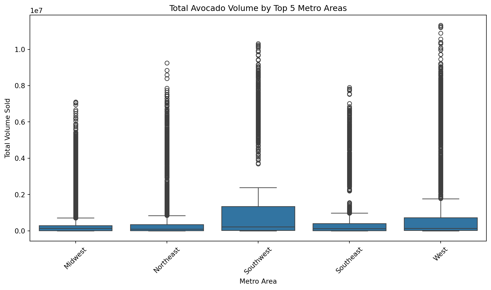
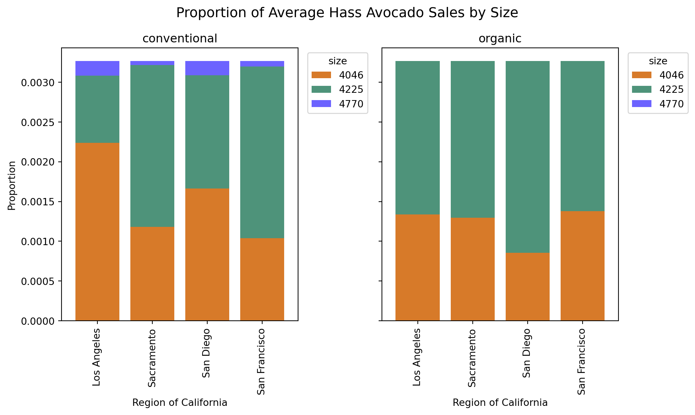
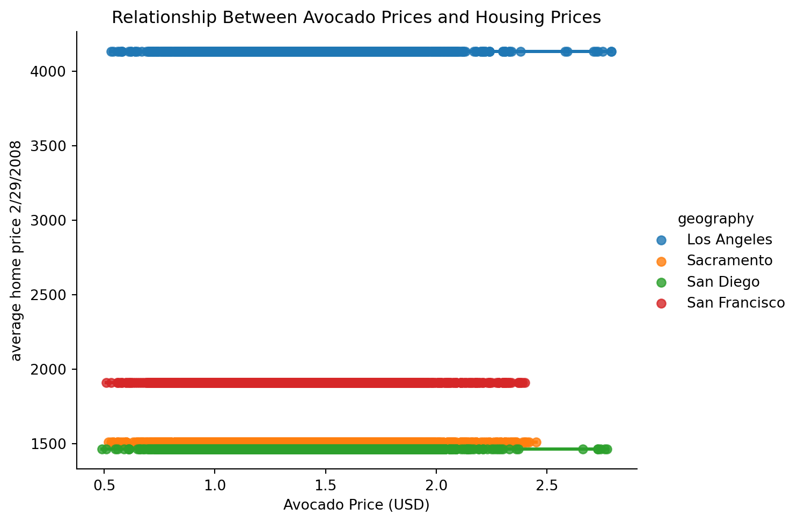
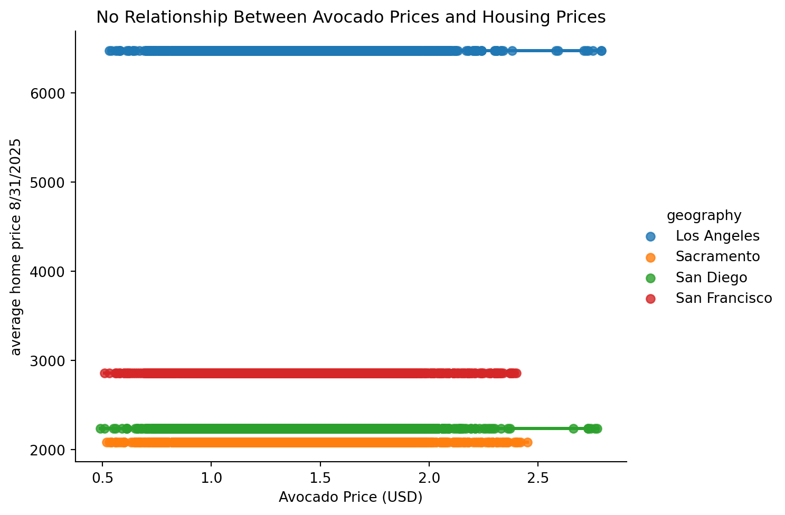

import pandas as pdLab 2
avocado_original = pd.read_csv("avocado-updated-2020.csv")
avocado = avocado_original
avocado.head()| date | average_price | total_volume | 4046 | 4225 | 4770 | total_bags | small_bags | large_bags | xlarge_bags | type | year | geography | |
|---|---|---|---|---|---|---|---|---|---|---|---|---|---|
| 0 | 2015-01-04 | 1.22 | 40873.28 | 2819.50 | 28287.42 | 49.90 | 9716.46 | 9186.93 | 529.53 | 0.0 | conventional | 2015 | Albany |
| 1 | 2015-01-04 | 1.79 | 1373.95 | 57.42 | 153.88 | 0.00 | 1162.65 | 1162.65 | 0.00 | 0.0 | organic | 2015 | Albany |
| 2 | 2015-01-04 | 1.00 | 435021.49 | 364302.39 | 23821.16 | 82.15 | 46815.79 | 16707.15 | 30108.64 | 0.0 | conventional | 2015 | Atlanta |
| 3 | 2015-01-04 | 1.76 | 3846.69 | 1500.15 | 938.35 | 0.00 | 1408.19 | 1071.35 | 336.84 | 0.0 | organic | 2015 | Atlanta |
| 4 | 2015-01-04 | 1.08 | 788025.06 | 53987.31 | 552906.04 | 39995.03 | 141136.68 | 137146.07 | 3990.61 | 0.0 | conventional | 2015 | Baltimore/Washington |
- The dataset contains multiple obervations of avocados. Including the average price of one avocado, total volume, Total number of avocados with PLU 4225 sold, Total number of avocados with PLU 4770 sold, number of bags including small, large, and extra large bags, type of bag, year, and the geography of the avocados.
avocado['geography'] = avocado['geography'].astype('category')avocado["geography"].unique()['Albany', 'Atlanta', 'Baltimore/Washington', 'Boise', 'Boston', ..., 'Syracuse', 'Tampa', 'Total U.S.', 'West', 'West Tex/New Mexico']
Length: 54
Categories (54, object): ['Albany', 'Atlanta', 'Baltimore/Washington', 'Boise', ..., 'Tampa', 'Total U.S.', 'West', 'West Tex/New Mexico']avocado['geography'] = avocado['geography'].replace({
'Albany': 'Northeast',
'Atlanta': 'Southeast',
'Baltimore/Washington': 'Southeast',
'Boise': 'West',
'Boston': 'Northeast',
'Buffalo/Rochester': 'Northeast',
'California': 'West',
'Charlotte': 'Southeast',
'Chicago': 'Plains',
'Cincinnati/Dayton': 'Midsouth',
'Columbus': 'Midsouth',
'Dallas/Ft. Worth': 'South Central',
'Denver': 'West',
'Detroit': 'Plains',
'Grand Rapids': 'Plains',
'Great Lakes': 'Plains',
'Harrisburg/Scranton': 'Northeast',
'Hartford/Springfield': 'Northeast',
'Houston': 'South Central',
'Indianapolis': 'Midsouth',
'Jacksonville': 'Southeast',
'Las Vegas': 'West',
'Los Angeles': 'West',
'Louisville': 'Midsouth',
'Miami/Ft. Lauderdale': 'Southeast',
'Midsouth': 'Midsouth',
'Nashville': 'Midsouth',
'New Orleans/Mobile': 'South Central',
'New York': 'Northeast',
'Northeast': 'Northeast',
'Northern New England': 'Northeast',
'Orlando': 'Southeast',
'Philadelphia': 'Northeast',
'Phoenix/Tucson': 'West',
'Pittsburgh': 'Northeast',
'Plains': 'Plains',
'Portland': 'West',
'Raleigh/Greensboro': 'Southeast',
'Richmond/Norfolk': 'Southeast',
'Roanoke': 'Southeast',
'Sacramento': 'West',
'San Diego': 'West',
'San Francisco': 'West',
'Seattle': 'West',
'South Carolina': 'Southeast',
'South Central': 'South Central',
'Southeast': 'Southeast',
'Spokane': 'West',
'St. Louis': 'Plains',
'Syracuse': 'Northeast',
'Tampa': 'Southeast',
'Total U.S.': None,
'West': 'West',
'West Tex/New Mexico': 'West'
})C:\Users\piavi\AppData\Local\Temp\ipykernel_33600\3951571499.py:1: FutureWarning:
The behavior of Series.replace (and DataFrame.replace) with CategoricalDtype is deprecated. In a future version, replace will only be used for cases that preserve the categories. To change the categories, use ser.cat.rename_categories instead.
avocado.rename(columns={
'4046': 'Small Hass Avocados',
'4225': 'Medium Hass Avocados',
'4770': 'Large Hass Avocados'
}, inplace=True)
avocado| date | average_price | total_volume | Small Hass Avocados | Medium Hass Avocados | Large Hass Avocados | total_bags | small_bags | large_bags | xlarge_bags | type | year | geography | |
|---|---|---|---|---|---|---|---|---|---|---|---|---|---|
| 0 | 2015-01-04 | 1.22 | 40873.28 | 2819.50 | 28287.42 | 49.90 | 9716.46 | 9186.93 | 529.53 | 0.00 | conventional | 2015 | Northeast |
| 1 | 2015-01-04 | 1.79 | 1373.95 | 57.42 | 153.88 | 0.00 | 1162.65 | 1162.65 | 0.00 | 0.00 | organic | 2015 | Northeast |
| 2 | 2015-01-04 | 1.00 | 435021.49 | 364302.39 | 23821.16 | 82.15 | 46815.79 | 16707.15 | 30108.64 | 0.00 | conventional | 2015 | Southeast |
| 3 | 2015-01-04 | 1.76 | 3846.69 | 1500.15 | 938.35 | 0.00 | 1408.19 | 1071.35 | 336.84 | 0.00 | organic | 2015 | Southeast |
| 4 | 2015-01-04 | 1.08 | 788025.06 | 53987.31 | 552906.04 | 39995.03 | 141136.68 | 137146.07 | 3990.61 | 0.00 | conventional | 2015 | Southeast |
| ... | ... | ... | ... | ... | ... | ... | ... | ... | ... | ... | ... | ... | ... |
| 33040 | 2020-11-29 | 1.47 | 1583056.27 | 67544.48 | 97996.46 | 2617.17 | 1414878.10 | 906711.52 | 480191.83 | 27974.75 | organic | 2020 | NaN |
| 33041 | 2020-11-29 | 0.91 | 5811114.22 | 1352877.53 | 589061.83 | 19741.90 | 3790665.29 | 2197611.02 | 1531530.14 | 61524.13 | conventional | 2020 | West |
| 33042 | 2020-11-29 | 1.48 | 289961.27 | 13273.75 | 19341.09 | 636.51 | 256709.92 | 122606.21 | 134103.71 | 0.00 | organic | 2020 | West |
| 33043 | 2020-11-29 | 0.67 | 822818.75 | 234688.01 | 80205.15 | 10543.63 | 497381.96 | 285764.11 | 210808.02 | 809.83 | conventional | 2020 | West |
| 33044 | 2020-11-29 | 1.35 | 24106.58 | 1236.96 | 617.80 | 1564.98 | 20686.84 | 17824.52 | 2862.32 | 0.00 | organic | 2020 | West |
33045 rows × 13 columns
3) Which major geographical region sold the most total organic, small Hass avocados in 2017?
avocado['date'] = pd.to_datetime(avocado['date'])
avocado_2017 = avocado[(avocado['date'].dt.year == 2017) &
(avocado['type'] == 'organic')]region_sales = avocado_2017.groupby('geography')['Small Hass Avocados'].sum()
print(f"The top region is {region_sales.idxmax()} with {region_sales.max()} small organic hass avocados sold in 2017.")The top region is West with 5826061.33 small organic hass avocados sold in 2017.C:\Users\piavi\AppData\Local\Temp\ipykernel_33600\103549062.py:1: FutureWarning:
The default of observed=False is deprecated and will be changed to True in a future version of pandas. Pass observed=False to retain current behavior or observed=True to adopt the future default and silence this warning.
##The top region is West with 5826061.33 small organic hass avocados sold in 2017.
4)Split the date variable into month, day, and year variables. In which month is the highest average volume of avocado sales?
avocado['year'] = avocado['date'].dt.year
avocado['month'] = avocado['date'].dt.month
avocado['day'] = avocado['date'].dt.day
avocado| date | average_price | total_volume | Small Hass Avocados | Medium Hass Avocados | Large Hass Avocados | total_bags | small_bags | large_bags | xlarge_bags | type | year | geography | month | day | |
|---|---|---|---|---|---|---|---|---|---|---|---|---|---|---|---|
| 0 | 2015-01-04 | 1.22 | 40873.28 | 2819.50 | 28287.42 | 49.90 | 9716.46 | 9186.93 | 529.53 | 0.00 | conventional | 2015 | Northeast | 1 | 4 |
| 1 | 2015-01-04 | 1.79 | 1373.95 | 57.42 | 153.88 | 0.00 | 1162.65 | 1162.65 | 0.00 | 0.00 | organic | 2015 | Northeast | 1 | 4 |
| 2 | 2015-01-04 | 1.00 | 435021.49 | 364302.39 | 23821.16 | 82.15 | 46815.79 | 16707.15 | 30108.64 | 0.00 | conventional | 2015 | Southeast | 1 | 4 |
| 3 | 2015-01-04 | 1.76 | 3846.69 | 1500.15 | 938.35 | 0.00 | 1408.19 | 1071.35 | 336.84 | 0.00 | organic | 2015 | Southeast | 1 | 4 |
| 4 | 2015-01-04 | 1.08 | 788025.06 | 53987.31 | 552906.04 | 39995.03 | 141136.68 | 137146.07 | 3990.61 | 0.00 | conventional | 2015 | Southeast | 1 | 4 |
| ... | ... | ... | ... | ... | ... | ... | ... | ... | ... | ... | ... | ... | ... | ... | ... |
| 33040 | 2020-11-29 | 1.47 | 1583056.27 | 67544.48 | 97996.46 | 2617.17 | 1414878.10 | 906711.52 | 480191.83 | 27974.75 | organic | 2020 | NaN | 11 | 29 |
| 33041 | 2020-11-29 | 0.91 | 5811114.22 | 1352877.53 | 589061.83 | 19741.90 | 3790665.29 | 2197611.02 | 1531530.14 | 61524.13 | conventional | 2020 | West | 11 | 29 |
| 33042 | 2020-11-29 | 1.48 | 289961.27 | 13273.75 | 19341.09 | 636.51 | 256709.92 | 122606.21 | 134103.71 | 0.00 | organic | 2020 | West | 11 | 29 |
| 33043 | 2020-11-29 | 0.67 | 822818.75 | 234688.01 | 80205.15 | 10543.63 | 497381.96 | 285764.11 | 210808.02 | 809.83 | conventional | 2020 | West | 11 | 29 |
| 33044 | 2020-11-29 | 1.35 | 24106.58 | 1236.96 | 617.80 | 1564.98 | 20686.84 | 17824.52 | 2862.32 | 0.00 | organic | 2020 | West | 11 | 29 |
33045 rows × 15 columns
average_month = avocado.groupby('month')['total_volume'].mean()average_monthmonth
1 9.853122e+05
2 1.095374e+06
3 9.957150e+05
4 1.016582e+06
5 1.123632e+06
6 1.051247e+06
7 9.832681e+05
8 9.499249e+05
9 9.064773e+05
10 8.446863e+05
11 8.223470e+05
12 8.076695e+05
Name: total_volume, dtype: float64The month with the highest average avocado sales is May with 1123632.25 units on average
5) Which metro area geographical regions sold the most total avocados? Plot side-by-side box-plots of the total volume for only the five metro geographical regions with the highest averages for the total_volume variable.
import seaborn as sns
import matplotlib.pyplot as pltavocado_five_metro = avocado
avocado_five_metro['geography'] = avocado['geography'].replace({
'Albany': 'Northeast',
'Boston': 'Northeast',
'Buffalo/Rochester': 'Northeast',
'Harrisburg/Scranton': 'Northeast',
'Hartford/Springfield': 'Northeast',
'New York': 'Northeast',
'Northeast': 'Northeast',
'Northern New England': 'Northeast',
'Philadelphia': 'Northeast',
'Pittsburgh': 'Northeast',
'Syracuse': 'Northeast',
'Baltimore/Washington': 'Northeast',
'Atlanta': 'Southeast',
'Charlotte': 'Southeast',
'Jacksonville': 'Southeast',
'Miami/Ft. Lauderdale': 'Southeast',
'Orlando': 'Southeast',
'Raleigh/Greensboro': 'Southeast',
'Richmond/Norfolk': 'Southeast',
'Roanoke': 'Southeast',
'South Carolina': 'Southeast',
'Tampa': 'Southeast',
'Southeast': 'Southeast',
'Chicago': 'Midwest',
'Cincinnati/Dayton': 'Midwest',
'Columbus': 'Midwest',
'Detroit': 'Midwest',
'Grand Rapids': 'Midwest',
'Great Lakes': 'Midwest',
'Indianapolis': 'Midwest',
'Louisville': 'Midwest',
'Midsouth': 'Midwest',
'Nashville': 'Midwest',
'St. Louis': 'Midwest',
'Plains': 'Midwest',
'Dallas/Ft. Worth': 'Southwest',
'Houston': 'Southwest',
'New Orleans/Mobile': 'Southwest',
'South Central': 'Southwest',
'Boise': 'West',
'California': 'West',
'Denver': 'West',
'Las Vegas': 'West',
'Los Angeles': 'West',
'Phoenix/Tucson': 'West',
'Portland': 'West',
'Sacramento': 'West',
'San Diego': 'West',
'San Francisco': 'West',
'Seattle': 'West',
'Spokane': 'West',
'West': 'West',
'West Tex/New Mexico': 'West',
'Total U.S.': None
})C:\Users\piavi\AppData\Local\Temp\ipykernel_33600\1401186176.py:2: FutureWarning:
The behavior of Series.replace (and DataFrame.replace) with CategoricalDtype is deprecated. In a future version, replace will only be used for cases that preserve the categories. To change the categories, use ser.cat.rename_categories instead.
plt.figure(figsize=(12, 6))
sns.boxplot(x='geography', y='total_volume', data=avocado_five_metro)
plt.xticks(rotation=45)
plt.title("Total Avocado Volume by Top 5 Metro Areas")
plt.ylabel("Total Volume Sold")
plt.xlabel("Metro Area")
plt.show()
6) From your cleaned data set, create a data set with only these California regions and answer the following questions about these California regions only.
avocado_original = pd.read_csv("avocado-updated-2020.csv")
avocado_cali = avocado_original[avocado_original['geography'].isin([
'Los Angeles', 'San Diego', 'San Francisco', 'Sacramento'
])]
avocado_cali| date | average_price | total_volume | 4046 | 4225 | 4770 | total_bags | small_bags | large_bags | xlarge_bags | type | year | geography | |
|---|---|---|---|---|---|---|---|---|---|---|---|---|---|
| 44 | 2015-01-04 | 0.85 | 2682159.95 | 1837999.65 | 524430.47 | 64225.78 | 255504.05 | 215571.80 | 36981.72 | 2950.53 | conventional | 2015 | Los Angeles |
| 45 | 2015-01-04 | 1.25 | 54495.54 | 47721.51 | 1723.40 | 0.00 | 5050.63 | 5050.63 | 0.00 | 0.00 | organic | 2015 | Los Angeles |
| 80 | 2015-01-04 | 1.05 | 430138.88 | 110693.69 | 270107.61 | 9737.50 | 39600.08 | 39600.08 | 0.00 | 0.00 | conventional | 2015 | Sacramento |
| 81 | 2015-01-04 | 1.33 | 9213.49 | 3727.52 | 4327.52 | 0.00 | 1158.45 | 1158.45 | 0.00 | 0.00 | organic | 2015 | Sacramento |
| 82 | 2015-01-04 | 0.94 | 461607.33 | 244152.26 | 165299.33 | 15302.75 | 36852.99 | 30884.29 | 5595.00 | 373.70 | conventional | 2015 | San Diego |
| ... | ... | ... | ... | ... | ... | ... | ... | ... | ... | ... | ... | ... | ... |
| 33018 | 2020-11-29 | 1.43 | 23531.38 | 3303.69 | 2057.03 | 0.00 | 18170.66 | 18144.54 | 26.12 | 0.00 | organic | 2020 | Sacramento |
| 33019 | 2020-11-29 | 1.12 | 469356.72 | 104509.99 | 19988.45 | 7210.47 | 337647.81 | 189341.36 | 127701.64 | 20604.81 | conventional | 2020 | San Diego |
| 33020 | 2020-11-29 | 1.95 | 25799.95 | 894.63 | 838.11 | 0.00 | 24067.21 | 9691.46 | 14375.75 | 0.00 | organic | 2020 | San Diego |
| 33021 | 2020-11-29 | 1.50 | 644141.37 | 128555.43 | 136718.24 | 5597.21 | 373270.49 | 159276.65 | 207760.32 | 6233.52 | conventional | 2020 | San Francisco |
| 33022 | 2020-11-29 | 1.87 | 59527.02 | 2815.23 | 4542.30 | 0.00 | 52169.49 | 52034.33 | 135.16 | 0.00 | organic | 2020 | San Francisco |
2448 rows × 13 columns
7) In which California regions is the price of organic versus conventional avocados most different? Support your answer with a few summary statistics AND a visualization.
price_summary = (
avocado_cali.groupby(['geography', 'type'])['average_price']
.mean()
.unstack() # separate organic/conventional into columns
)
price_summary['difference'] = abs(price_summary['organic'] - price_summary['conventional'])
price_summary = price_summary.sort_values('difference', ascending=False)
print(price_summary)type conventional organic difference
geography
San Francisco 1.400490 2.119444 0.718954
San Diego 1.113856 1.798366 0.684510
Sacramento 1.295359 1.873856 0.578497
Los Angeles 1.047124 1.574902 0.5277788) The following plot shows, for all four California regions, the proportion of the average Hass avocado sales that are small, large, or extra large; conventional vs. organic. Recreate the plot; you do not have to replicate the exact finishing touches - e.g., color, theme - but your plot should resemble the content of this plot.
avocado_cali| date | average_price | total_volume | 4046 | 4225 | 4770 | total_bags | small_bags | large_bags | xlarge_bags | type | year | geography | |
|---|---|---|---|---|---|---|---|---|---|---|---|---|---|
| 44 | 2015-01-04 | 0.85 | 2682159.95 | 1837999.65 | 524430.47 | 64225.78 | 255504.05 | 215571.80 | 36981.72 | 2950.53 | conventional | 2015 | Los Angeles |
| 45 | 2015-01-04 | 1.25 | 54495.54 | 47721.51 | 1723.40 | 0.00 | 5050.63 | 5050.63 | 0.00 | 0.00 | organic | 2015 | Los Angeles |
| 80 | 2015-01-04 | 1.05 | 430138.88 | 110693.69 | 270107.61 | 9737.50 | 39600.08 | 39600.08 | 0.00 | 0.00 | conventional | 2015 | Sacramento |
| 81 | 2015-01-04 | 1.33 | 9213.49 | 3727.52 | 4327.52 | 0.00 | 1158.45 | 1158.45 | 0.00 | 0.00 | organic | 2015 | Sacramento |
| 82 | 2015-01-04 | 0.94 | 461607.33 | 244152.26 | 165299.33 | 15302.75 | 36852.99 | 30884.29 | 5595.00 | 373.70 | conventional | 2015 | San Diego |
| ... | ... | ... | ... | ... | ... | ... | ... | ... | ... | ... | ... | ... | ... |
| 33018 | 2020-11-29 | 1.43 | 23531.38 | 3303.69 | 2057.03 | 0.00 | 18170.66 | 18144.54 | 26.12 | 0.00 | organic | 2020 | Sacramento |
| 33019 | 2020-11-29 | 1.12 | 469356.72 | 104509.99 | 19988.45 | 7210.47 | 337647.81 | 189341.36 | 127701.64 | 20604.81 | conventional | 2020 | San Diego |
| 33020 | 2020-11-29 | 1.95 | 25799.95 | 894.63 | 838.11 | 0.00 | 24067.21 | 9691.46 | 14375.75 | 0.00 | organic | 2020 | San Diego |
| 33021 | 2020-11-29 | 1.50 | 644141.37 | 128555.43 | 136718.24 | 5597.21 | 373270.49 | 159276.65 | 207760.32 | 6233.52 | conventional | 2020 | San Francisco |
| 33022 | 2020-11-29 | 1.87 | 59527.02 | 2815.23 | 4542.30 | 0.00 | 52169.49 | 52034.33 | 135.16 | 0.00 | organic | 2020 | San Francisco |
2448 rows × 13 columns
# got help from AI to make size variable
avocado_long = avocado_cali.melt(
id_vars=['geography', 'type', 'total_volume'], # columns to keep
value_vars=['4046', '4225', '4770'], # columns to unpivot
var_name='size', # new column name for variable
value_name='volume' # new column name for values
)avocado_long["average_price"] = avocado["average_price"]# got help from AI to make proportions and transformations
avocado_long['proportion'] = avocado_long.groupby(["type", "geography"])["volume"].transform(lambda x: x / x.sum())#had problems trying to import plotnine looked up other ways to graph with AI
import matplotlib.pyplot as plt
avocado_long.rename(columns={
'4046': 'Small Hass Avocados',
'4225': 'Medium Hass Avocados',
'4770': 'Large Hass Avocados'
}, inplace=True)
# 2 Create a pivot table for plotting
avocado_cali_pivot = (
avocado_long.pivot_table(
index=['type', 'geography'],
columns='size',
values='proportion',
aggfunc='mean'
)
.fillna(0)
)
# 3 Plot stacked bars
fig, axes = plt.subplots(1, 2, figsize=(10, 6), sharey=True)
types = avocado_cali_pivot.index.get_level_values('type').unique()
colors = ['#D77A29', '#4E937A', '#6C63FF'] # Small, Large, Xlarge
for ax, t in zip(axes, types):
avocado_cali_pivot.loc[t].plot(
kind='bar',
stacked=True,
color=colors,
ax=ax,
width=0.8
)
ax.set_title(t, fontsize=12)
ax.set_xlabel('Region of California')
ax.set_ylabel('Proportion')
ax.legend(title='size', bbox_to_anchor=(1.02, 1), loc='upper left')
fig.suptitle('Proportion of Average Hass Avocado Sales by Size', fontsize=14)
plt.tight_layout()
plt.show()
#Had some problems trying to do this last part I will come into office hours to try and figure it out.
metro = pd.read_csv("metro_sales.csv")
metro_clean = metro[metro["StateName"] == "CA"]
metro_clean| RegionID | SizeRank | RegionName | RegionType | StateName | 2/29/2008 | 3/31/2008 | 4/30/2008 | 5/31/2008 | 6/30/2008 | ... | 11/30/2024 | 12/31/2024 | 1/31/2025 | 2/28/2025 | 3/31/2025 | 4/30/2025 | 5/31/2025 | 6/30/2025 | 7/31/2025 | 8/31/2025 | |
|---|---|---|---|---|---|---|---|---|---|---|---|---|---|---|---|---|---|---|---|---|---|
| 2 | 753899 | 2 | Los Angeles, CA | msa | CA | 4133 | 5052 | 6084 | 6870 | 7215 | ... | 5712 | 6000 | 4605 | 5274 | 6234 | 7012 | 6685 | 6589 | 6934 | 6476 |
| 12 | 395057 | 12 | San Francisco, CA | msa | CA | 1910 | 2511 | 3078 | 3393 | 3541 | ... | 2745 | 2453 | 1724 | 2260 | 3035 | 3234 | 3272 | 3272 | 3105 | 2859 |
| 13 | 395025 | 13 | Riverside, CA | msa | CA | 2586 | 3383 | 3888 | 4717 | 4960 | ... | 3055 | 3324 | 2923 | 3106 | 3741 | 4025 | 3917 | 3698 | 3909 | 3536 |
| 17 | 395056 | 17 | San Diego, CA | msa | CA | 1461 | 1668 | 2272 | 2619 | 2559 | ... | 1914 | 1924 | 1639 | 1821 | 2075 | 2465 | 2282 | 2236 | 2248 | 2234 |
| 26 | 395045 | 26 | Sacramento, CA | msa | CA | 1508 | 1841 | 2366 | 2726 | 3013 | ... | 1712 | 1730 | 1416 | 1550 | 1840 | 2118 | 2112 | 2015 | 2151 | 2081 |
| 35 | 395059 | 36 | San Jose, CA | msa | CA | 722 | 911 | 1074 | 1256 | 1369 | ... | 1082 | 954 | 642 | 809 | 1127 | 1309 | 1190 | 1244 | 1126 | 1105 |
| 56 | 394619 | 57 | Fresno, CA | msa | CA | 323 | 401 | 513 | 551 | 601 | ... | 564 | 542 | 495 | 482 | 560 | 704 | 671 | 667 | 711 | 690 |
| 62 | 394357 | 63 | Bakersfield, CA | msa | CA | 439 | 511 | 624 | 723 | 771 | ... | 602 | 551 | 520 | 571 | 668 | 692 | 775 | 705 | 755 | 702 |
| 70 | 394952 | 71 | Oxnard, CA | msa | CA | 390 | 424 | 621 | 590 | 651 | ... | 463 | 468 | 399 | 411 | 591 | 584 | 604 | 603 | 644 | 636 |
| 75 | 395134 | 77 | Stockton, CA | msa | CA | 407 | 542 | 728 | 871 | 1021 | ... | 445 | 462 | 415 | 420 | 484 | 512 | 542 | 524 | 488 | 473 |
10 rows × 216 columns
metro_cleanii = metro_clean[metro_clean["RegionName"].isin([
"Los Angeles, CA", "San Francisco, CA", "San Diego, CA", "Sacramento, CA"
])]
metro_cleanii| RegionID | SizeRank | RegionName | RegionType | StateName | 2/29/2008 | 3/31/2008 | 4/30/2008 | 5/31/2008 | 6/30/2008 | ... | 11/30/2024 | 12/31/2024 | 1/31/2025 | 2/28/2025 | 3/31/2025 | 4/30/2025 | 5/31/2025 | 6/30/2025 | 7/31/2025 | 8/31/2025 | |
|---|---|---|---|---|---|---|---|---|---|---|---|---|---|---|---|---|---|---|---|---|---|
| 2 | 753899 | 2 | Los Angeles, CA | msa | CA | 4133 | 5052 | 6084 | 6870 | 7215 | ... | 5712 | 6000 | 4605 | 5274 | 6234 | 7012 | 6685 | 6589 | 6934 | 6476 |
| 12 | 395057 | 12 | San Francisco, CA | msa | CA | 1910 | 2511 | 3078 | 3393 | 3541 | ... | 2745 | 2453 | 1724 | 2260 | 3035 | 3234 | 3272 | 3272 | 3105 | 2859 |
| 17 | 395056 | 17 | San Diego, CA | msa | CA | 1461 | 1668 | 2272 | 2619 | 2559 | ... | 1914 | 1924 | 1639 | 1821 | 2075 | 2465 | 2282 | 2236 | 2248 | 2234 |
| 26 | 395045 | 26 | Sacramento, CA | msa | CA | 1508 | 1841 | 2366 | 2726 | 3013 | ... | 1712 | 1730 | 1416 | 1550 | 1840 | 2118 | 2112 | 2015 | 2151 | 2081 |
4 rows × 216 columns
metro_cleanii["geography"] = metro_cleanii["RegionName"].map({
"Los Angeles, CA": "Los Angeles",
"San Francisco, CA": "San Francisco",
"San Diego, CA": "San Diego",
"Sacramento, CA": "Sacramento"
})C:\Users\piavi\AppData\Local\Temp\ipykernel_33600\2089290849.py:1: SettingWithCopyWarning:
A value is trying to be set on a copy of a slice from a DataFrame.
Try using .loc[row_indexer,col_indexer] = value instead
See the caveats in the documentation: https://pandas.pydata.org/pandas-docs/stable/user_guide/indexing.html#returning-a-view-versus-a-copy
avocado_with_summary = pd.merge(avocado_long, metro_cleanii, on='geography', how='left')
avocado_with_summary| geography | type | total_volume | size | volume | average_price | proportion | RegionID | SizeRank | RegionName | ... | 11/30/2024 | 12/31/2024 | 1/31/2025 | 2/28/2025 | 3/31/2025 | 4/30/2025 | 5/31/2025 | 6/30/2025 | 7/31/2025 | 8/31/2025 | |
|---|---|---|---|---|---|---|---|---|---|---|---|---|---|---|---|---|---|---|---|---|---|
| 0 | Los Angeles | conventional | 2682159.95 | 4046 | 1837999.65 | 1.22 | 0.003505 | 753899 | 2 | Los Angeles, CA | ... | 5712 | 6000 | 4605 | 5274 | 6234 | 7012 | 6685 | 6589 | 6934 | 6476 |
| 1 | Los Angeles | organic | 54495.54 | 4046 | 47721.51 | 1.79 | 0.004424 | 753899 | 2 | Los Angeles, CA | ... | 5712 | 6000 | 4605 | 5274 | 6234 | 7012 | 6685 | 6589 | 6934 | 6476 |
| 2 | Sacramento | conventional | 430138.88 | 4046 | 110693.69 | 1.00 | 0.000926 | 395045 | 26 | Sacramento, CA | ... | 1712 | 1730 | 1416 | 1550 | 1840 | 2118 | 2112 | 2015 | 2151 | 2081 |
| 3 | Sacramento | organic | 9213.49 | 4046 | 3727.52 | 1.76 | 0.001718 | 395045 | 26 | Sacramento, CA | ... | 1712 | 1730 | 1416 | 1550 | 1840 | 2118 | 2112 | 2015 | 2151 | 2081 |
| 4 | San Diego | conventional | 461607.33 | 4046 | 244152.26 | 1.08 | 0.002479 | 395056 | 17 | San Diego, CA | ... | 1914 | 1924 | 1639 | 1821 | 2075 | 2465 | 2282 | 2236 | 2248 | 2234 |
| ... | ... | ... | ... | ... | ... | ... | ... | ... | ... | ... | ... | ... | ... | ... | ... | ... | ... | ... | ... | ... | ... |
| 7339 | Sacramento | organic | 23531.38 | 4770 | 0.00 | 0.77 | 0.000000 | 395045 | 26 | Sacramento, CA | ... | 1712 | 1730 | 1416 | 1550 | 1840 | 2118 | 2112 | 2015 | 2151 | 2081 |
| 7340 | San Diego | conventional | 469356.72 | 4770 | 7210.47 | 1.31 | 0.000073 | 395056 | 17 | San Diego, CA | ... | 1914 | 1924 | 1639 | 1821 | 2075 | 2465 | 2282 | 2236 | 2248 | 2234 |
| 7341 | San Diego | organic | 25799.95 | 4770 | 0.00 | 0.73 | 0.000000 | 395056 | 17 | San Diego, CA | ... | 1914 | 1924 | 1639 | 1821 | 2075 | 2465 | 2282 | 2236 | 2248 | 2234 |
| 7342 | San Francisco | conventional | 644141.37 | 4770 | 5597.21 | 1.36 | 0.000027 | 395057 | 12 | San Francisco, CA | ... | 2745 | 2453 | 1724 | 2260 | 3035 | 3234 | 3272 | 3272 | 3105 | 2859 |
| 7343 | San Francisco | organic | 59527.02 | 4770 | 0.00 | 1.18 | 0.000000 | 395057 | 12 | San Francisco, CA | ... | 2745 | 2453 | 1724 | 2260 | 3035 | 3234 | 3272 | 3272 | 3105 | 2859 |
7344 rows × 223 columns
sns.lmplot(data=avocado_with_summary, x='average_price', y='2/29/2008', hue='geography', aspect=1.3)
plt.title("Relationship Between Avocado Prices and Housing Prices")
plt.xlabel("Avocado Price (USD)")
plt.ylabel("average home price 2/29/2008")
plt.show()
sns.lmplot(data=avocado_with_summary, x='average_price', y='8/31/2025', hue='geography', aspect=1.3)
plt.title("No Relationship Between Avocado Prices and Housing Prices")
plt.xlabel("Avocado Price (USD)")
plt.ylabel("average home price 8/31/2025")
plt.show()